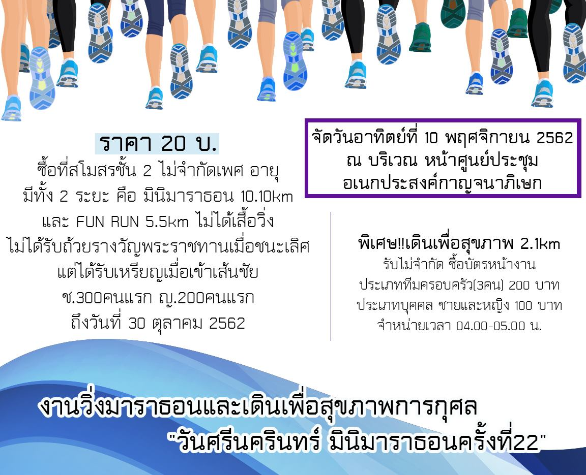

เมื่อวันที่ 20 พฤศิจกายน 2562 รศ.ดร.รัชพล สันติวรากร คณบดีคณะวิศวกรรมศาสตร์ ลงนามบันทึกข้อตกลงความร่วมมือ ระหว่างศูนย์วิจัยและพัฒนาโครงสร้างมูลฐานอย่างยั่งยืน คณะวิศวกรรมศาสตร์ กับบริษัท Toyota Infotechnology Center โดย Dr.Chang Yi Luo ในโครงการ Evaluation of Automated Road Incident Counter - measure in Thailand งบประมาณ 2 ล้านเยน ทั้งนี้เพื่อเก็บรวบรวมข้อมูลการขับขี่รถยนต์ของประเทศในการนำไปใช้ในการออกแบบและหาแนวทางลดอุบัติเหตุในประเทศ โครงการนี้ทางบริษัททำกับหลายประเทศในกลุ่มเอเชียแปซิฟิค สำหรับประเทศไทย ได้เลือก มหาวิทยาลัยขอนแก่น ดำเนินการเพียงแห่งเดียว นับเป็นความร่วมมือที่เป็นประโยชน์และเป็นส่วนหนึ่งที่จะช่วยแก้ไขปัญหาอุบัติเหตุที่เป็นปัญหาสำคัญของประเทศได้
